词法分析
词法分析是编译的第一个阶段，任务是从左至右逐个字符地对源程序进行扫描，产生 一个个单词符号，把字符串形式的源程序改造成为单词符号串形式的中间程序。
词法分析器
执行词法分析的程序称为词法分析程序，也称词法分析器 (Lexical Analyzer) 又称扫描器 (Scanner)。
最基本的要求是能够实现输入源程序、输出单词符号。
单词符号
单词符号是程序语言最基本的语法单位，具有确定的语法意义。
单词符号的种类：
- 基本字（保留字）：如
for、while - 标识符：如变量名、数组名
- 常数：各种类型的常数
- 运算符：如
+，-，*，/ - 界符：如
,、;、[、{
::: tip
一个程序语言的基本字、运算符、界符的个数是确定的，常数、标识符的个数是不确定的。
:::
输出的单词符号的表示形式：( 单词种别，单词自身的值 )
-
单词种别
通常用整数编码表示，表示单词的种类，它是语法分析所需要的信息。
- 若一个种别只有一个单词符号，则种别编码就代表该单词符号。
- 若一个种别有多个单词符号，则对于每个单词符号，给出种别编码和自身的值。
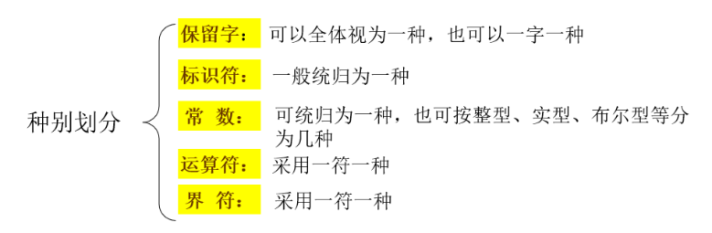
-
单词自身的值
是编译中其它阶段所需要的信息。
对于单词符号来说，
- 如果一个种别只含有一个单词符号，其种别编码就完全代表了它自身的值。
- 如果一个种别含有多个单词符号，那么对于它的每个单词符号，除了给出种别编码之外还应给出单词符号自身的值。
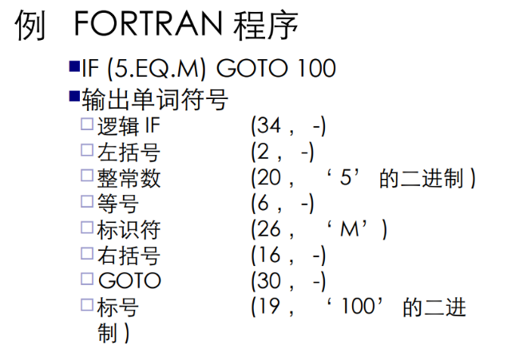
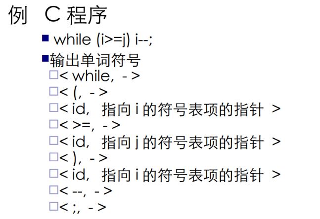
词法分析程序与语法分析程序的接口方式
词法分析可以采用两种处理结构：
-
把词法分析程序做为主程序
把词法分析工作可以是独立的一遍，即把源程序变为单词符号串形式的中间程序，把这个中间程序作为语法分析程序的输入。在这种结构中，词法分析和语法分析是分别实现的。
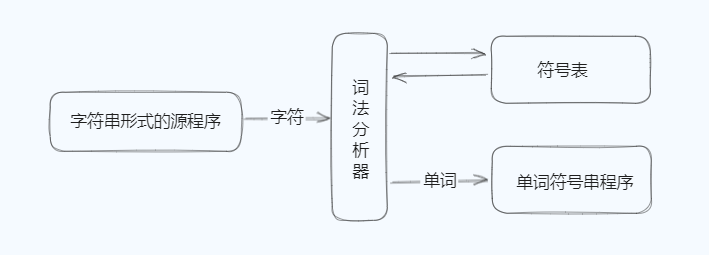
-
把词法分析程序做为子程序
每当语法分析程序需要一个单词时，则调用该子程序。词法分析程序每得到一次调用，便从源程序文件中读入一些字符，直到识别出一个单词，或说直到下一单词的第一个字符为止。
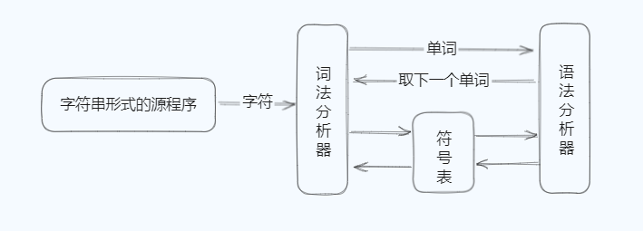
::: tip
通常采用第二种处理结构。
:::
词法分析器的结构
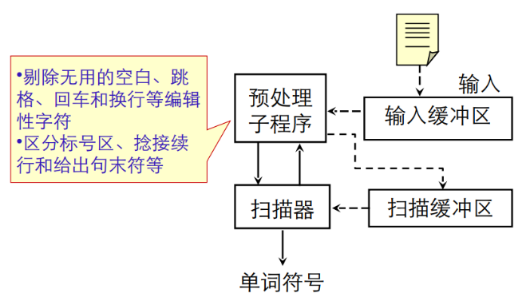
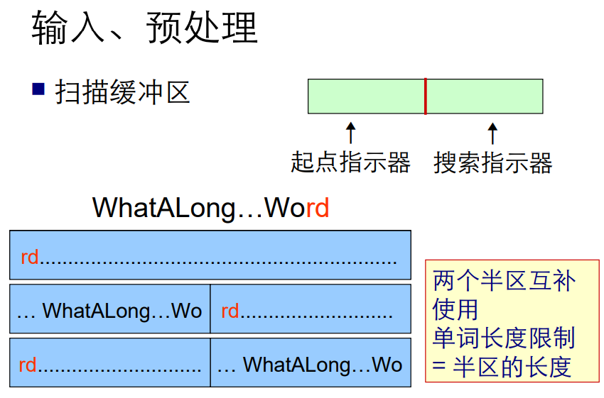
状态转换图
在词法分析中，可以用状态转换图来识别单词。
什么是状态转换图
状态转换图是有限的有向图。结点代表状态，用圆圈表示；结点之间用有向边连接，有向边上可以标记字符。
一张转换图只包含有限个状态， 其中有一个为初态，至少要有一个终态（终止状态）。终态的结点使用双圆圈表示以区别于其它状态。
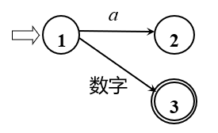
状态转换图可用于识别 ( 或接受 ) 一定的字符串。若存在一条从初态到某一终态的道路，且这条路上所有边上的标记符连接成的字等于，则称为该状态转换图所识别 ( 接受 )。
::: tip
终态右上角的” * “表示要退掉最后一个读入的字符。
:::
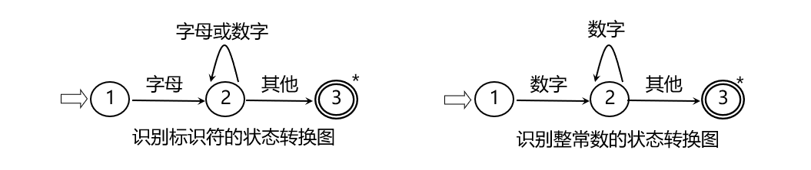
状态转换图的实现
每个状态结点对应一小段程序。
方法：
- 对不含回路的分叉结点 ，可用一个
switch语句或if else语句实现； - 对含回路的状态结点，可对应一段由
while语句； - 终态结点表示识别出某种单词符号，对应语句为
return(单词种类,单词自身的值)
状态转换矩阵
状态转换矩阵行表示状态，列表示输入字符。
状态转换矩阵与状态转换图表示的内容一样，只是表示的方式不一样。
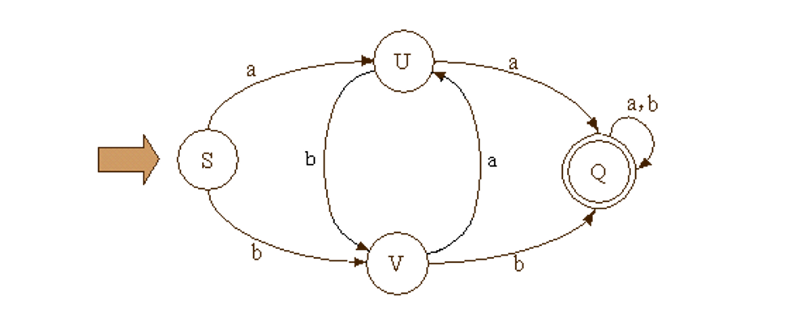
将上述状态转换图转换成状态转换矩阵，如下图表示
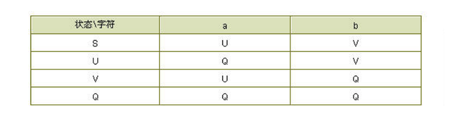
正规表达式
正规式和正规集的定义
正规表达式是一种形式化的表示法，它可以表示单词符号的结构，从而精确地定义单词符号集。
正规表达式简称正规式，它表示的集合即为正规集。
::: info 例如
假设某个语言的标识符是以字母开头的字母数字字符串，字母使用 表示，数字使用 表示，则标识符可表示为：
- 和 的并置表示两者连接；
- “ ”读为“或”，表示 或 二选一；
- “ ”读为“闭包”，表示零次或多次引用；
- 表示 的零次或多次并置；
- 表示以字母开头的字母数字字符串，即标识符集
在以上例子中， 就是正规式；标识符集就是正规集。
:::
对于给定的字母表为，正规式和正规集的递归定义：
- 和 都是上的正规式，它们所表示的正规集分别为 和 ；
- 对于任何一个 ， 是上的一个正规式，它所表示的正规集为 ；
- 如果 和 是上的正规式，他们所表示的正规集分别为和，则：
- 是上的正规式，它所表示的正规集为；
- 是上的正规式，它所表示的正规集为；
- 是上的正规式，它所表示的正规集为；
- 是上的正规式，它所表示的正规集为；
仅由有限次使用上述三个规则得到表达式才是上的正规式，仅由这些正规式表示的字集才是上的正规集。
::: info 相关概念
- 上的字（字符串）：指由中的字符所构成的一个有穷序列；
- “ ”：表示上的所有字的全体，若，则；
- “ ”：表示空字，即不包含任何字符的序列；
- “ ”：表示不包含任何序列的空集；
- “ ”：读为“或”，也可以使用“ ”代替；
- “ ”：读为“连接”，通常可以省略；
- “ ”：读为“闭包”；
:::
::: tip
表示的不包含任何字的集合； 是由空字组成的集合；
:::
的正规式 和 的连接定义为 ； 自身的 次连接记为 ；
规定 ，令 ，称 是 的闭包；令 ，称 是 的正则闭包。
对于 上的正规式 和 ，如果它所表示的正规集，则称 和 是等价的，并记为 。
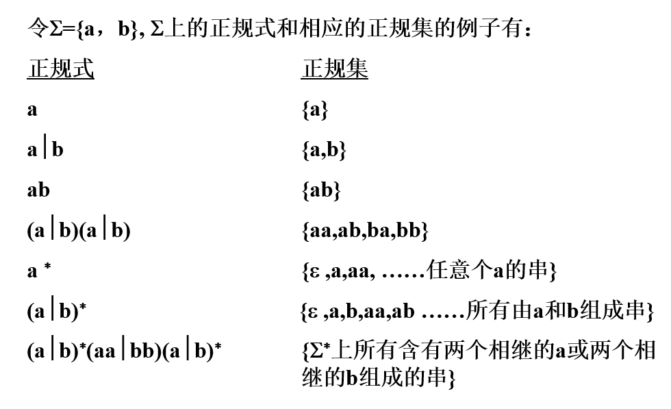
正规式的性质
- 交换律：
- 结合律：、
- 分配律：
- 同一律：
有限自动机
有限自动机FA是更一般化的状态转换图，它分为确定有限自动机DFA和非有限自动机NFA。
确定的有限自动机（DFA）
一个确定的有限自动机（记为DFA ）是一个五元组，其中：
- ：有限状态集，它的每一个元素称为一个状态；
- ：有穷输入字母表，它的每一个元素称为一个输入字符；
- ：状态转换函数，为 到 的单值映射，即 （ ，），表示当前状态为 ，输入字符a时，状态转换为 ；
- ：唯一的一个初态；
- ： 一个可空的终态集 ；
DFA可以表示为状态转换图。假定 DFA M 含有 m 个状态和 n 个输入字符，则这个图含有 m 个状态结点，每个结点顶多含有 n 条弧射出，且每条弧用上的不同的输入字符来作标记。
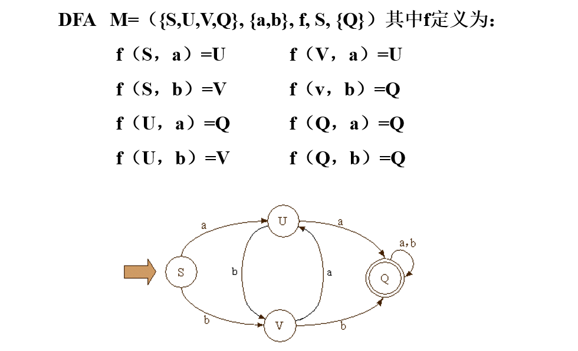
对于中的任何字 ，若存在一条从初态到某一终态的道路，且这条路上所有弧上的标记符连接成的字等于 ，则称 为 DFA M 所识别 ( 接收 )。
DFA M 所识别的字的全体记为L(M)。
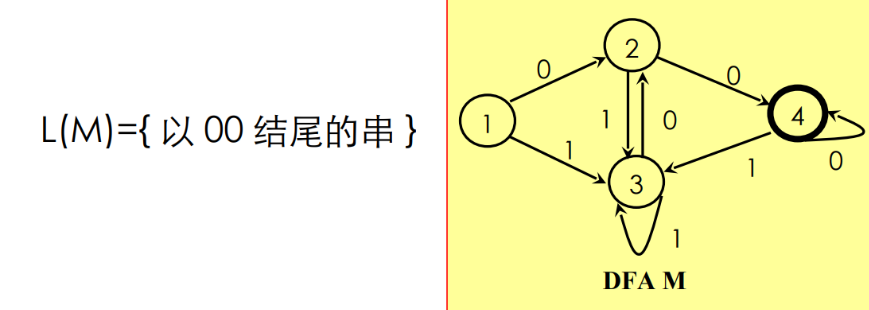
::: danger
上图状态4是终态，理应用双层圆圈表示，但不知是什么原因导致课件显示的不是双层圆圈。
:::
非确定的有限自动机（NFA）
一个确定的有限自动机（记为NFA ）是一个五元组，其中：
- 的意义与DFA一样；
- ：状态转换函数，为 的部分映射；即 ，表示不能由当前状态和当前输入字符确定下一个要转换的状态；
- ：一个非空初态集，；
::: info NFA 和 DFA 的区别：
- NFA 可以多个初态，DFA 仅有一个初态；
- 弧上的标记可以是中的一个字 ( 甚至可以是一个正规式 ) ，而不一定是单个字符；
- NFA 状态转换图中，同一个字可能出现在同状态射出的多条弧上；
:::
::: tip
DFA 是 NFA 的特例。
:::
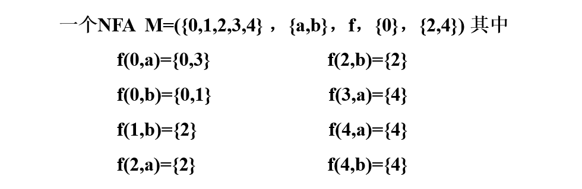
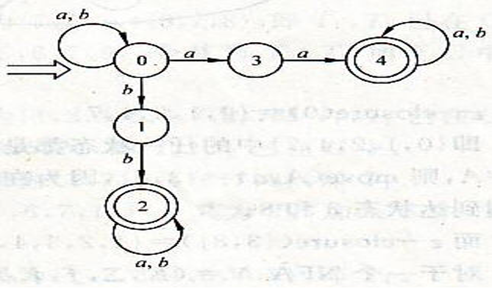
对于 中的任何字 ，若存在一条从初态到某一终态的道路，且这条路上所有弧上的标记字连接成的字等于 ( 忽略那些标记为 的弧 ) ，则称 为 NFA M 所识别 ( 接收 )。
NFA M 所识别的字的全体记为L(M)。
DFA与NFA等价
对于任何两个有限自动机 M 和 M’，如果 L(M)=L(M’)，则称 M 与 M’ 等价。
对于每个 NFA M 存在一个 DFA M’，使得 L(M)=L(M’)。因此，DFA是NFA的特例，NFA可以有DFA与之等价，即两者描述能力相同。
::: info
自动机理论中一个重要的结论：判定两个自动机等价性的算法是存在的。
DFA便于识别，易于计算机实现，而NFA便于定理的证明。
:::
NFA转变为DFA
假定 NFA M=，我们对 M 的状态转换图进行以下改造：
引入初态和终态
引进新的初态结点 和终态结点 ， ， 从 到 中任意状态结点连一条 弧，从 中任意状态结点连一条 弧到 。
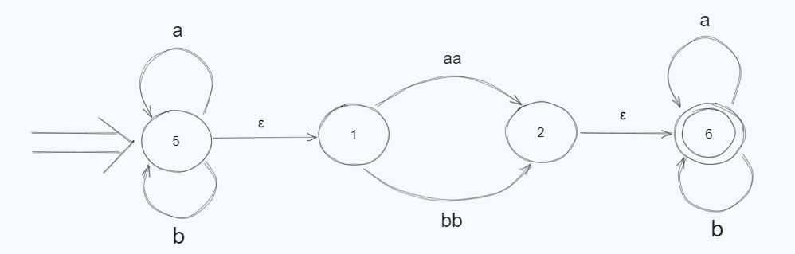
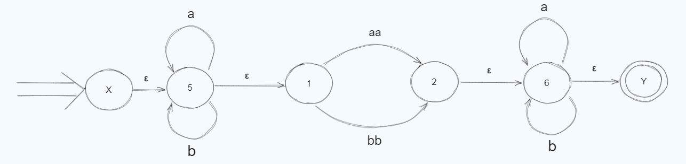
对NFA弧上的标记进行等价替换
对 M 的状态转换图进一步施行替换，其中 k 是新引入的状态。
按下面的三条规则对弧进行分裂 :
- 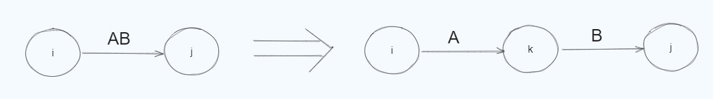
- 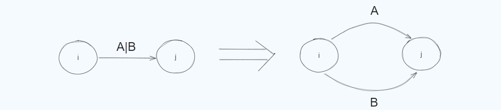
- 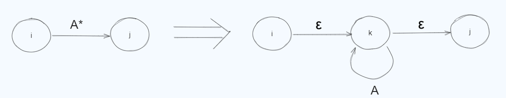
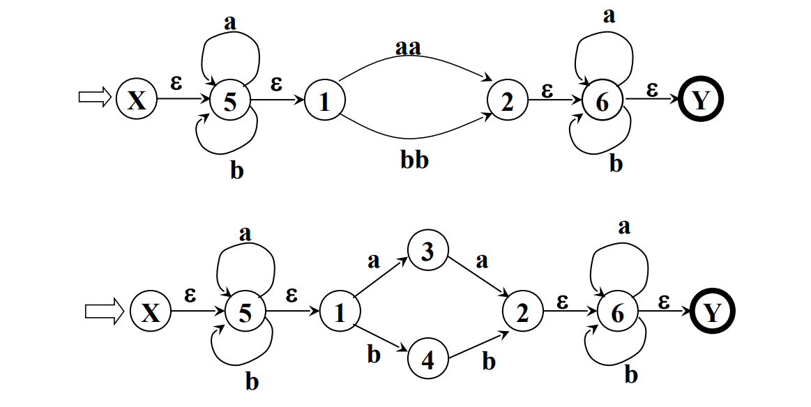
NFA的确定化
NFA的确定化：使用子集法将给定的NFA转换成等价的DFA。
首先介绍一下 , , 的相关概念：
-
设 是的状态集的一个子集，定义 的 -闭包，即 。其中，
- 状态集 中的任何状态 经任意条 弧而能到达的状态的集合都属于 ；
- 状态集 中的任何状态 都属于 ；
-
设 是 中的一个字符，定义 。其中， 为 中的某个状态出发经过一条 弧而到达的状态集合。
-
例如：
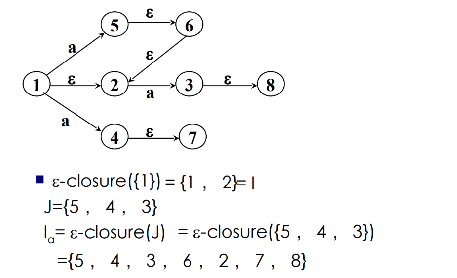
如何对NFA确定化：
- 构造转换表，第一列为 ，对不同的 在表单中单设一列 （即从第二列开始是 ，且）；
- 表的第一行第一列为 初始状态；
- 根据表中第一列的 ，求出对应的 ，然后检查它们是否已经出现在第一列，把未出现按顺序填入空行中的第一列；
- 重复上述过程，直到所有第2,3,4…列的子集全部出现在第一列为止。至此，我们就得到了对应NFA的转换表；
- 把转换表变成相应的状态转换矩阵，把其中的每个子集看成一个状态并对每个子集重命名，初态是初始状态，终态是含有原终态 Y 的子集。
例如：正规表达式 的NFA M如下图所示，将其转化成DFA M’。
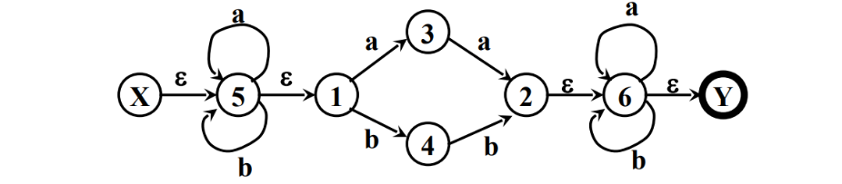
构造的转换表如下图所示
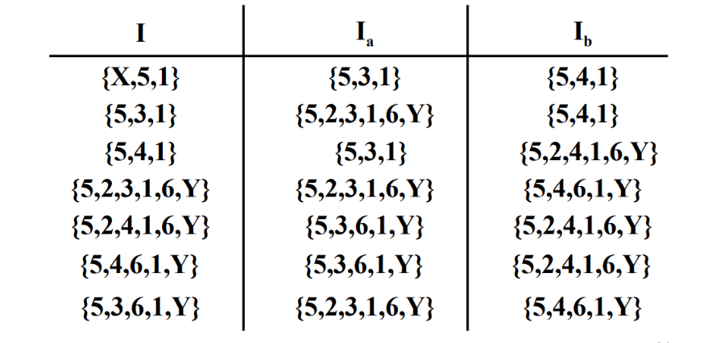
下图中划红线的是初态，蓝线的是终态
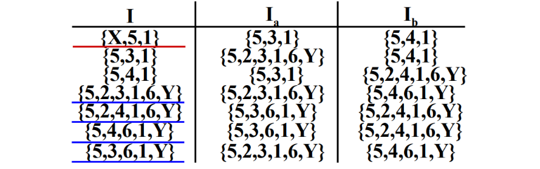
把转换表变成相应的状态转换矩阵和DFA M’
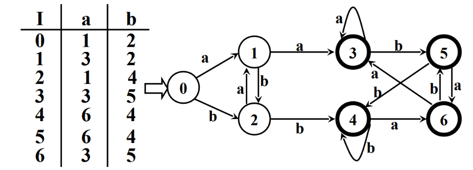
::: tip
上图所示的DFA M’是未化简的。
:::
DFA的化简
对 NFA 确定化后所得到的DFA可能含有多余状态。
对 DFA M 的化简就是寻找一个状态数比 M 少的 DFA M’ ，使得 L(M)=L(M’) 。化简后的 M’ 应该满足：
- 没有多余状态；
- 在其状态集中，没有两个相互等价的状态存在；
::: info 等价和可区分的状态
假设 s 和 t 为 M 的两个状态：
- 两个状态相互等价：如果从状态 s 出发能读出某个字而停止于终态，从 t 出发也能读出而停止于终态，则称 s 和 t 是等价的；
- 两个状态可区分：存在一个，要么 s 读出停止于终态而 t 读出停止于非终态，要么相反；
:::
::: info DFA M 最少化的基本思想
将 M 的状态集划分为一些不相交的子集， 使得任何两个不同子集的状态是可区别的 ，而同一子集的任何两个状态是等价的。 最后，每个子集选出一个状态，同时消去其他等价状态。
:::
化简步骤：
-
把 DFA M 的状态集 S 中的终态与非终态分开，形成两个子集。
-
对当前划分出的子集进行划分。划分依据：对某个 ，若存在一个输入字符 使得 不全包含在当前划分的某个子集 中，则至少应把 分为两个部分。
-
划分依据：
假定状态 和 经 a 弧分别到达 和 ，且 和 属于当前划分的两个不同子集。
由于属于不同子集的状态是可区分的，因此 和 也是可区分的，说明有一个字 ， 读出 后到达终态，而 读出 后不能到达终态，或者反之。
那么对于字 ， 读出 后到达终态 ，而 读出 不能到达终态，或者反之。所以 和 不等价。
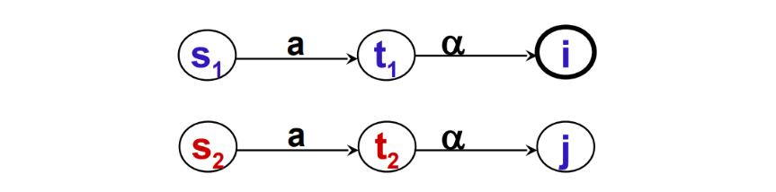
-
划分方法：
将 分成两半，使得一半含有 ，另一半含有 。
一般地，对某个 a 和 ，若 落入当前划分的子集中的 N 个不同子集，则应把 划分成 N 个不相交的组，使得每个组 的 都落入的当前划分的同一子集中。
-
-
重复步骤2，直到子集个数不再增加。这时选取每个子集 中的一个状态代表其他状态，则可得到化简后的 DFA M’。
若 含有原来的初态，则其代表为新的初态 ，若 含有原来的终态，则其代表为新的终态。
::: info
： 状态集合中的某一状态读入 之后能停在 的某一个状态。
:::
以上面 NFA 的确定化得到的DFA为例进行化简，
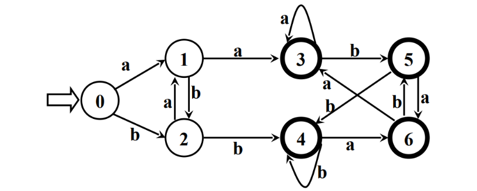
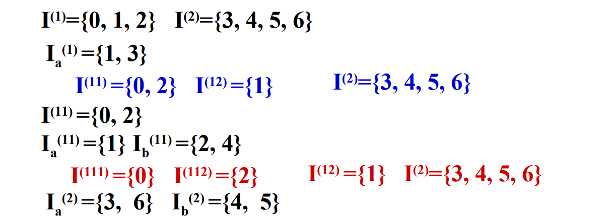
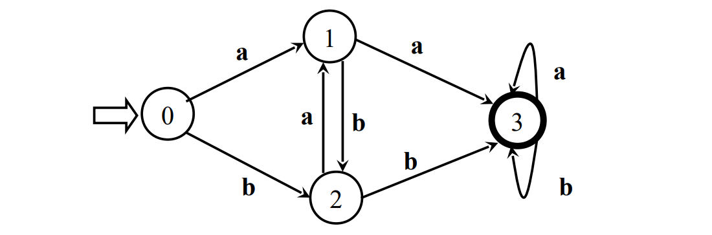
正规式与有限自动机的等价性
定理：
- 对任何 FA M ，都存在一个正规式 r ， 使得 L(r)=L(M) 。
- 对任何正规式 r ，都存在一个 FA M ， 使得 L(M)=L(r) 。
证明：对 上任一 NFA M ，构造一个 上的正规式 r ，使得 L(r)=L(M) 。
-
首先，在 M 的转换图上加进两个状态 X 和 Y ，从 X 用 弧连接到 M 的所有初态结点，从 M 的所有终态结点用 弧连接到 Y ，从而形成一个新的 NFA ，记为 M’ ，它只有一个初态 X 和一个终态 Y ，显然 L(M)=L(M’) 。
-
然后，反复使用下面的规则，逐步消去的所有结点，直到只剩下 X 和 Y 为止；
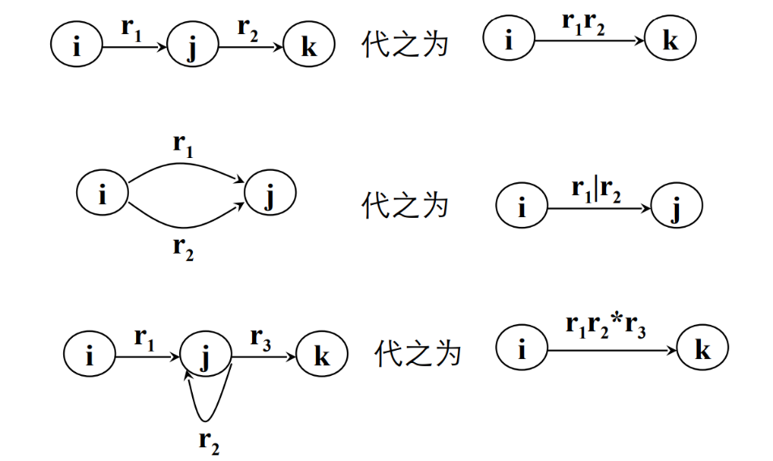
例如：
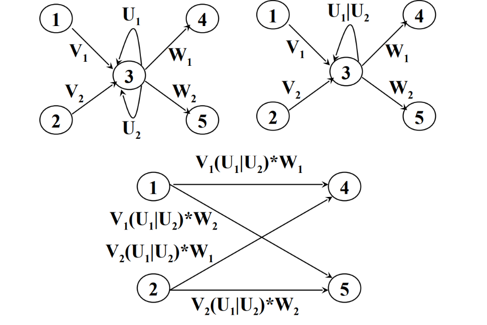
-
最后， X 到 Y 的弧上标记的正规式即为所构造的正规式 r。显然 L(r)=L(M)=L(M’)
证明：对于 上的正规式 r ，构造一个 NFA M ，使 L(M)=L(r) ，并且 M 只有一个终态，而且没有从该终态出发的弧。
-
若 r 具有零个运算符，则 或 或 ，其中 。
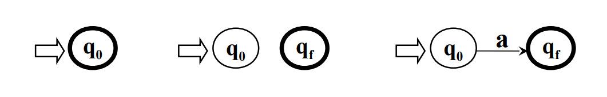
-
若 r 中含有 个运算符时， r 有三种情形 ：
对 存在 ，使得 ， 并且 没有从终态出发的弧。
-
情形1：， 和 中运算符个数少于 k 。
设 ，在 中加入两个新状态 ， 。
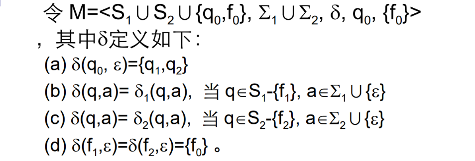
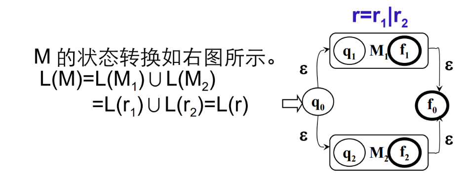
-
情形2：。
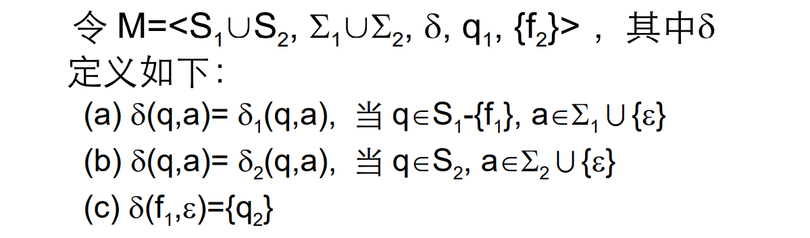
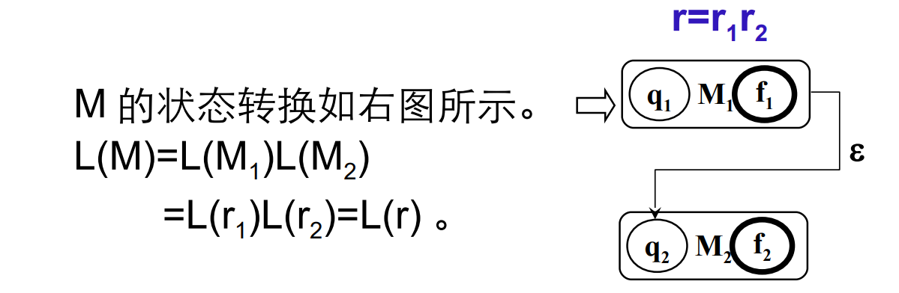
-
情形3： 。
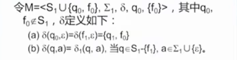
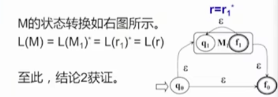
-
上述证明过程实质上是一个将正规表达式转换为有限自动机的算法。
-
构造 上的 NFA M’ 使得 L(V)=L(M’)
-
按下面的三条规则对 V 进行分裂
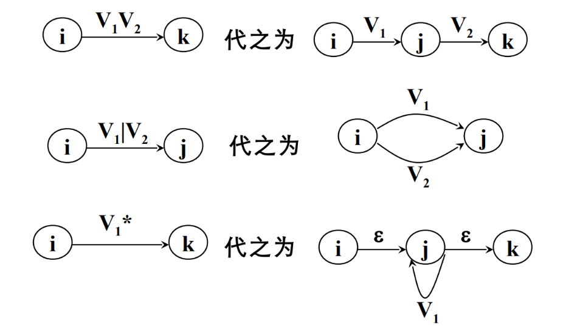
-
逐步把这个图转变为每条弧只标记为 上的 一个字符或 ，最后得到一个 NFA M’ ， 显然 L(M’)=L(V)
以下是将正规式转换成有限自动机的示例：
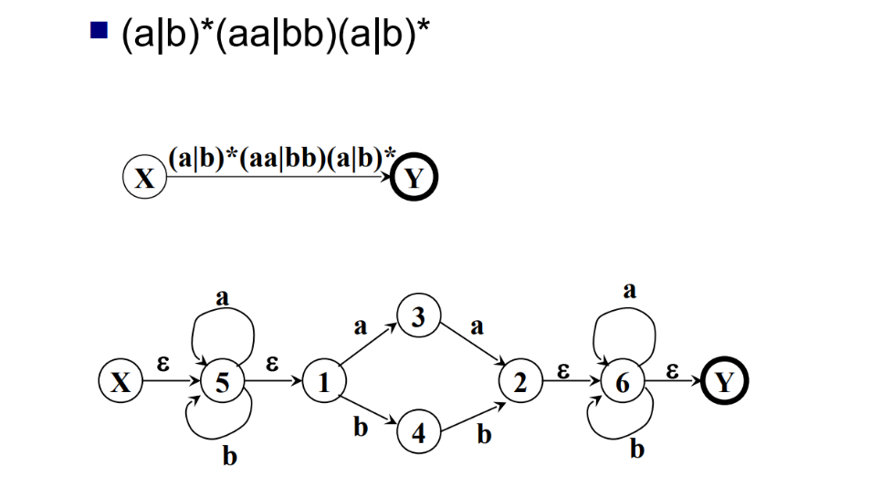
根据正规式得到NFA后，只需将NFA转变为DFA即可。
词法分析器的自动产生
Lex/Flex是一个词法分析器生成工具，通常和Yacc一起使用，生成编译器的前端。
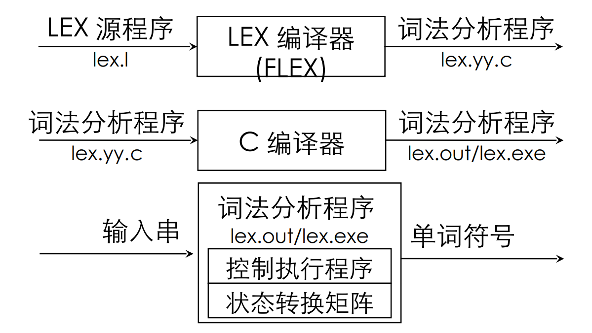
LEX 的工作过程：
- 首先，对每条识别规则 构造一个相应的非确定有限自动机 ；
- 然后，引进一个新初态 X ，通过 弧，将这些自动机连接成一个新的 NFA ；
- 最后，把 M 确定化、最小化，生成该 DFA 的状态转换表和控制执行程序；
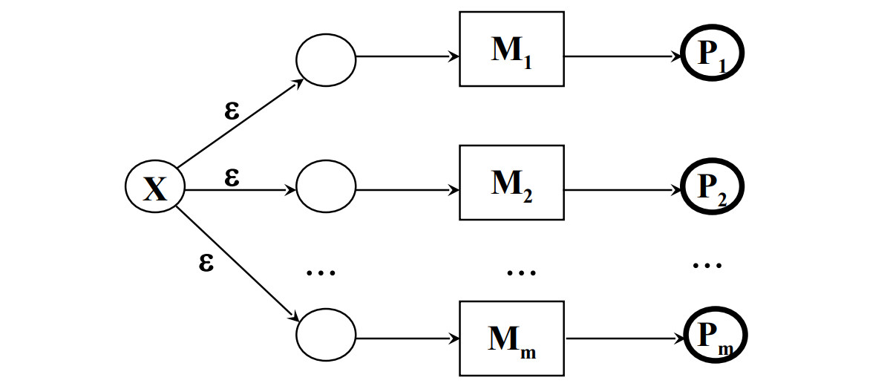